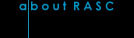
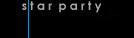

|
|  |
|  |
 |
About RASC |
Meetings are currently held in a hybrid format - you can attend in person, or by Zoom if you prefer. See the Activities page for instructions on joining the on-line meeting.
The meetings are open to the general public and there is no admission fee.
A list of current events may be found in the latest newsletter and Activities page.
See the RASC Bulletin for National news about the RASC!
How to Join the RASC Saskatoon CentreMembership in the Society is open to everyone who has an interest in astronomy.As a part of Canada's national astronomy Society, members of the Saskatoon Centre receive Society publications and services including the electronic edition of the Journal, and the annual Observer's Handbook.
(*Payment of fees includes membership both with the Saskatoon Centre and National organization of the RASC.)
|
New Members
Renewing Members
|
Questions about astronomy, the Saskatoon Centre or membership?
E-mail: sk_centre@rasc.ca
RASC Inc.
PO Box 31086, RPO Broadway
Saskatoon, SK S7H 5S8